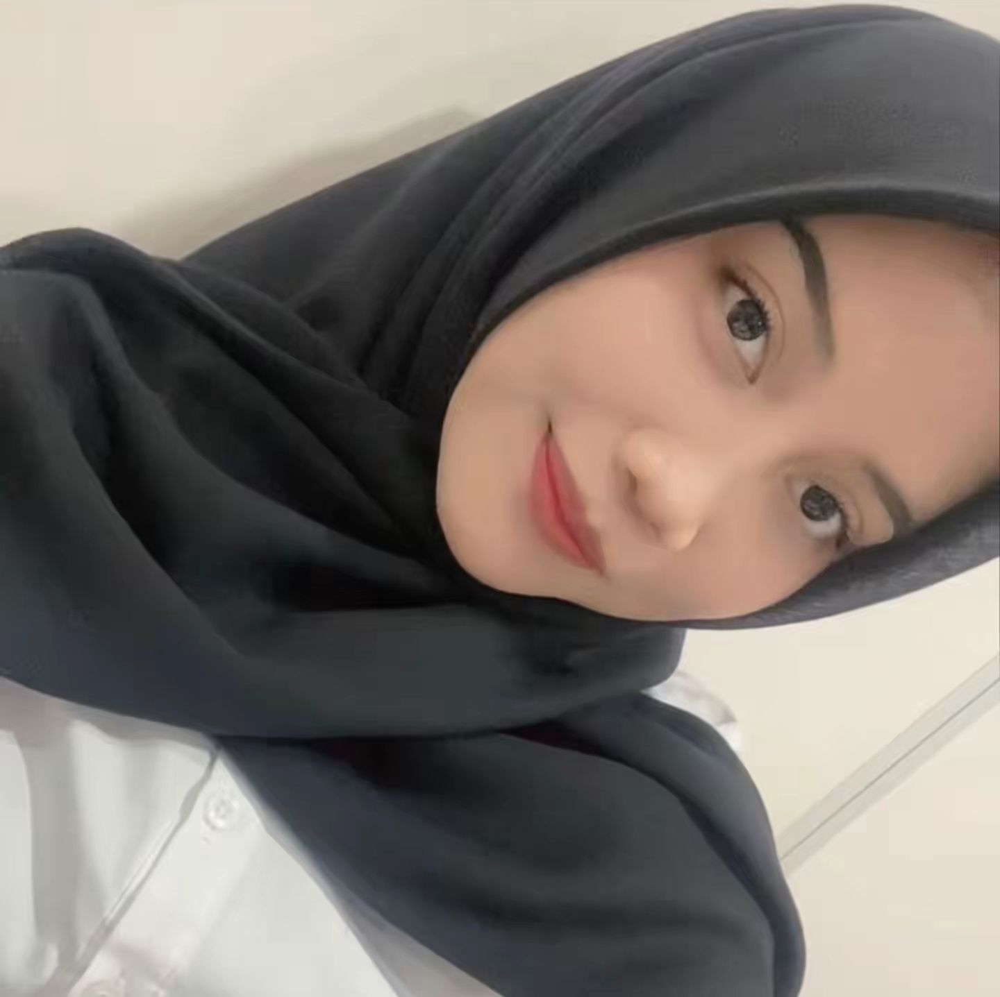

Foto Profil

📝 Tentang Saya
Halo! Perkenalkan nama saya Tasya Aulia Pratiwi. Saya lahir di
Medan pada tanggal 08 Agustus 2006. Saat ini saya berkuliah jurusan
Sistem Informasi di Universitas Muhammadiyah Sumatera Utara.
Saya memiliki ketertarikan yang besar dalam bidang teknologi,
terutama web development dan artificial intelligence.
Saya selalu bersemangat untuk belajar hal-hal baru dan mengembangkan
keterampilan saya.
📋 Data Pribadi
- Nama Lengkap: Tasya Aulia Pratiwi
- Tempat, Tanggal Lahir: Medan, 08 Agustus 2006
- Alamat: Jl. Platina 1 lingkungan 16 Payarumput No. 117, Medan
- Status: Belum Menikah
- Agama: Islam
- Kewarganegaraan: Indonesia
🎨 Hobi & Minat
- Membaca novel
- Menonton film dan series
- Traveling ke tempat-tempat baru
🎓 Riwayat Pendidikan
-
SD Negeri 064010 Medan (2012 - 2018)
Lulus dengan nilai rata-rata 8.0
-
SMP Negeri 42 Medan (2018 - 2021)
Lulus dengan nilai rata-rata 8.7
-
SMK Swasta Budi Agung Medan (2021 - 2024)
Jurusan Manajemen, lulus dengan nilai rata-rata 9.0
-
Universitas Muhammadiyah Sumatera Utara (2024 - Sekarang)
Jurusan Sistem Informasi, IPK 3.86/4.00
💻 Keterampilan
- Programming Languages: Python
- Database: MySQL
- Tools: VS Code
- Languages: Indonesia (Native), English (Advanced)
🏆 Pencapaian
Juara 3 Lomba Mewarnai (TK)
Juara 2 Hafalan Surah Pendek (TK)
Juara 3 Cerdas Cermat (SMP)
📅 Jadwal Harian
| Waktu |
Kegiatan |
| 05.00 - 06.00 |
Bangun dan persiapan pergi ngampus |
| 07.30 - 13.00 |
Kuliah |
| 13.30 - 16.00 |
Makan siang dan istirahat |
| 16.30 - 17.00 |
Membersihkan rumah |
| 18.00 - 21.00 |
Melakukan kegiatan pribadi |
| 21.30 - 22.00 |
Mengerjakan tugas |
| 23.00 - 05.00 |
Tidur |
📞 Kontak Saya
📱 Social Media
Instagram